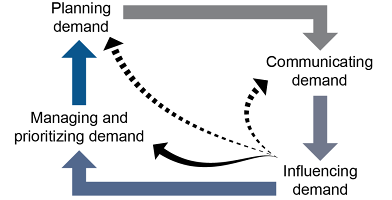
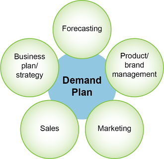
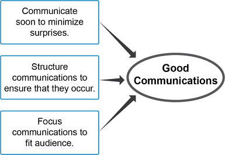
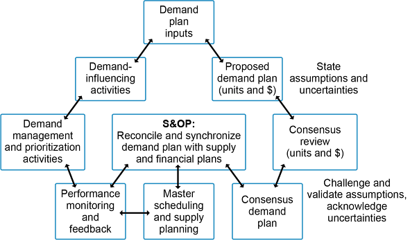
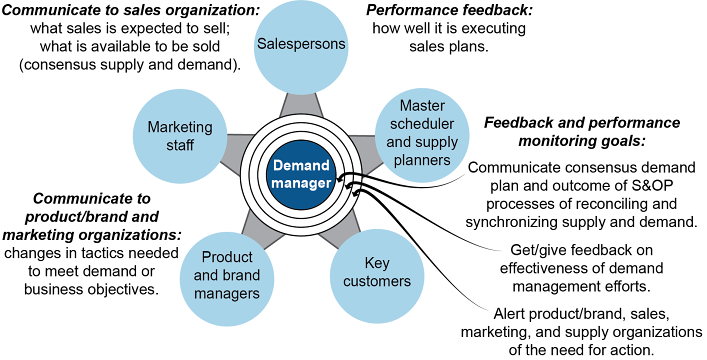
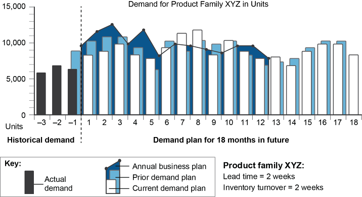

Demand management includes planning, communicating, influencing, and managing and prioritizing demand. After providing the big picture, the first two of these components are addressed here in more detail.
Demand Management Road Map
📖 ASCM Definition — demand:
📖 ASCM Definition — demand management:
Demand management is the art of synchronizing supply and demand plans.
The supply and demand functions in an organization or an extended supply chain each make plans for identifying/creating and satisfying demand. Demand management is the art of synchronizing supply and demand plans.
Demand management is necessary at each of the levels at which supply and demand plans are generated:
- Long-term strategic needs, including long-term forecasting, product development, or capacity development
- Medium-term aggregate demand forecasting and sales and operations planning
Short-term demand forecasting and item-level master scheduling
Note how the amount or unit of demand becomes more and more specific, from total revenue at the highest levels (not in units at all), to aggregate demand (categories of units such as product families), to specific items. Demand management analyzes the rate of consumption at these various unit levels not only to match the level of needed precision to the time scale of the decision but also to increase forecasting accuracy, as is explained more when discussing forecasting.
In organizations with multiple plants and/or supply chain collaboration efforts, demand management can help organize multiple sources of supply and demand. Sources of demand that could require coordination include domestic and foreign demand or wholesale and retail demand; sources of supply that could require coordination include plant capacities or specialization and inventories in plants, warehouses, and retail locations.
📖 ASCM Definition — demand management process:
These components of demand management, shown in Exhibit 1-20, are used not only to generate and communicate a balanced and realistic demand plan but also to proactively ensure that the demand plan is realized.

Demand management relates to business and customer requirements in that one of its purposes is to influence the organization to produce a product or service that satisfies actual customer requirements and expectations. If marketing professionals succeed in influencing the organization to produce products and services that meet customer requirements, the product/service package should have certain competitive characteristics that enable demand-influencing activities to have a chance to succeed. The following marketing terms from the ASCM Supply Chain Dictionary relate to a product or service's ability to compete for a customer's business:
- Order qualifiers: Those competitive characteristics that a firm must exhibit to be a viable competitor in the marketplace.
- Order winners: Those competitive characteristics that cause a firm's customers to choose that firm's goods and services over those of its competitors.
If marketing has successfully influenced the organization to produce a product or service that has the capability of being an order winner, product and brand management, marketing, and sales can work together to convince customers to purchase the organization's products and services in ways that the organization's business objectives are met or exceeded.
Another purpose of demand management is to convince customers to purchase an organization's products and services in a manner that supports business requirements, organizational strategy, and objectives (i.e., in a profitable manner). Marketing professionals use the elements of demand management to accomplish these goals.
Planning, communicating, influencing, and managing and prioritizing demand can be linked in several ways, including cycling through each component iteratively. Organizations may also prioritize certain components to match organizational strategy. Exhibit 1-21 shows, on a conceptual level, how the demand management components are cyclical. All of the components are necessary for long- and medium-term planning (e.g., product development). However, the dotted lines in the exhibit show how the cycle can be shortened at the short-term operational level to reduce the need for management and prioritization and/or planning demand when the principles and technologies of demand management are implemented throughout the supply chain. For example, by transferring customer demand data from the point of sale immediately to all supply chain partners, the short-term forecasting portion of planning demand can be replaced with actual demand data (i.e., moving from a push system to a demand-pull system). Timely communications will also tend to reduce the need for managing and prioritizing demand because supply will more quickly respond to changes in demand.

Let's look at four organizational capacity strategies that focus primarily on one of the four components of demand management.
Planning demand (fixed high capacity strategy). This organizational strategy involves meeting demand to the maximum extent possible by providing the necessary capacity to meet peak demand at any time. Ensuring that capacity will be available requires a focus on planning demand, especially in terms of long-term planning. Such a strategy could be pursued if the costs of maintaining excess capacity are considered to be less than those of losing business.
Communicating demand (highly variable capacity strategy). This organizational strategy involves matching supply to demand as closely as possible by being flexible enough to increase or reduce capacity spontaneously as demand changes. Matching strategies such as these require a focus on communications so that the changes in supply can be proactive rather than reactive. Such strategies may employ a great deal of contract work, outsourcing, and flexible work scheduling.
Influencing demand (moderately variable capacity strategy). This organizational strategy involves leveling production and carefully managing demand to meet optimal capacity. The focus is on influencing demand so that there is little need to change capacity. Sometimes this process is called demand shaping because it involves convincing customers to buy certain models based on excess inventory. Demand is influenced by carefully scheduling delivery of products and services (e.g., offering discounts for accepting longer lead times) and timing promotions to operational requirements. Demand could also be influenced by convincing customers to buy in a different quantity per order (bulk purchases or more frequent smaller purchases).
Managing and prioritizing demand (fixed average capacity strategy). This organizational strategy involves controlling demand to the maximum extent possible through scheduling, promotions, queues, and rationing. The focus is on managing and prioritizing demand because fixed average capacity will, by definition, result in periods of insufficient supply. This strategy could be beneficial for products or services that require development and retention of expert personnel or other expensive resources. Airlines that promote early ticket purchases with promotional fares and penalize flyers who buy a ticket at the last minute are examples of companies using this strategy.
Planning Demand and Demand Plan
Planning demand includes forecasting activities, but that is just its start. Planning demand moves beyond predicting what demand will be because it is a plan for action based partly on those predictions.
A key output of the demand planning process should be regular updates to the demand plan. The demand plan is a consensus document requesting products and services from the supply side of the organization to meet the expected future demand for the organization's products and services in each period. It is an estimate of how many products customers will purchase, in what unit sizes, at what price, and on what timetable so the organization and its suppliers can determine how much to produce, when to produce it, and when to ship it. The demand plan is based partly on forecasting and partly on commitments by the demand side of the organization to generate the necessary demand to meet the plan and the goals set in the organization's business plan.
Planning demand can be highly collaborative. For example, collaborative planning, forecasting, and replenishment systems help formalize the coordination of forecasting and demand plan creation.
Demand Plan Inputs
The demand plan, as shown in Exhibit 1-22, influences and is influenced by forecasting; by commitments by product and brand management, marketing, and sales to create, influence, manage, and prioritize demand; and by the business plan and strategy.

In addition to the plans listed in Exhibit 1-22, other key inputs to the demand plan are the assumptions used and the level of uncertainty encountered by the persons responsible for preparing the forecasts. These assumptions and uncertainties should be documented, reviewed, and challenged in the monthly S&OP review process to validate that the demand plan is realistic and actionable. Knowledge of assumptions and uncertainties will also help the organization determine the best way to arrive at a consensus regarding demand plan numbers.
Uses of Demand Plan
The demand plan is used by multiple areas of the organization because it indicates demand both in units and in monetary amounts such as euros or dollars. In this way, each audience for the demand plan can view the information in the most meaningful terms. Operations, logistics, customer service, and product development can view the plan in units; finance can view the plan in monetary amounts; marketing and sales can view both units and monetary amounts.
For example, the plan may provide sales with an indication of the types and numbers of units that will be available to sell per product family and also expected sales goals.
Another use of the demand plan is for validation and control of the plans of individual departments within an organization. Operations and logistics can verify that resource plans are sufficient to meet the expected levels of demand. Finance can use the plan to forecast revenues, product costs, profit margins, and cash flows. Executives can review these projections and determine if the demand plan and related plans of product and brand management, marketing, and sales will have the desired financial and market share results. If not, executives and managers can use the replanning process as a business control. However, the demand plan should not be arbitrarily changed to match the business plan: This would send a signal that the demand analysis and consensus activities at an organization are not valued or respected.
Holding the demand side of the organization accountable for the consequences of producing too much inventory can be an effective control over unrealistic demand plans.
A key control to keep demand plans realistic is to treat the plans as a request for product from the supply side of the organization. In making this request, the demand side of the organization is stating that it is committed to creating this amount of demand and selling the products in the requested amounts. Holding the demand side of the organization accountable for the consequences of producing too much inventory can be an effective control over unrealistic demand plans.
Close scrutiny of the demand plan can also reveal when inputs may be biased or assumptions unrealistic. For example, if the demand plan input by sales shows a reduction in demand but there is no change in the underlying assumptions from the prior periods, executives could question why the demand was lowered. If the sales force is compensated based on meeting its sales targets, it may have been a case of lowering the target so that success would be easier to achieve.
Planning Horizon and Revision Period
A best practice is to produce a demand plan that has at least an 18-month planning horizon and to revise it by replanning on a regular basis. Many organizations use the S&OP process to incorporate these regular revisions to the plan and to reconcile and synchronize their internal department plans. Regular revision allows the plan to quickly reflect changes in external factors, such as the economy or competitor actions, as well as internal factors, such as branding and product life cycle decisions, lower- or higher-than-expected results from marketing activities or sales promotions, and efforts to bring the plan into alignment with the business plan and strategy.
An 18-month minimum horizon has other advantages:
- It ensures that each period's demand has been planned and reviewed multiple times, with increasing accuracy each time.
- Planned product and brand management and marketing activities typically span at least an 18-month horizon, and sales activities typically span at least a 12-month horizon, so the most current and reliable information on internal plans and likely actions of customers and competitors falls within this 18-month range.
- If the demand plan does not seem to be capable of achieving the goals in the business plan and strategy, a longer horizon allows organizations time to plan and execute additional activities to meet the revenue goals.
- If the demand plan shows a need to increase capacity, it gives the organization sufficient time to approve and execute capital expenditures.
- By midyear the demand plan will show the next year's projected demand and can be used as a key input to the annual business plan.
Communicating Demand
Communicating demand is the second component of demand management. While clear internal communications are necessary and important, the real power of communicating demand is found when it is extended to supply chain partners.
Supply chain managers can counteract supply chain demand variability such as the bullwhip effect by communicating demand effectively to all parties in the supply chain. On a basic level this involves order processing. Order processing is "the activity required to administratively process a customer's order and make it ready for shipment or production" (ASCM Supply Chain Dictionary).
From a collaborative demand management standpoint, this may involve producing and forwarding a sales order to the most efficient supply channel, such as
An inventory storage location, authorizing the goods to be shipped
A production plant, authorizing production and specifying all information required by the master planner (what, how much, and when).
The demand manager or another demand-side professional may also send a copy of the sales order to the customer to communicate the terms and conditions of the sale. In this way, demand management serves as an intermediary between the customer and production planning.
Organizations can use information-sharing tools such as collaborative planning, forecasting, and replenishment (CPFR) to find a balance between the desire for centralized supply chain planning to provide network integration and optimization and allowing each region to analyze its own market from a local perspective. Each regional partner can be encouraged to share this local expertise with the larger network.
Communicating demand, both internally and externally, rests on the principles of effective communication shown in Exhibit 1-23.

Communicate Soon.
Communicating soon to minimize surprises is the principle that information communicated promptly is of far greater value than communications delayed for any reason. This is true for both good news and bad news as well as for information that is still uncertain. This communications principle is easy to understand but sometimes challenging to put into practice consistently. For example, a marketing person could delay communicating a sales promotion because the effect on demand is proving difficult to quantify. While this is a poor reason not to communicate the promotion, it is also a common example of how people rationalize communications delays. In this case, the promotion might be very successful but the lack of planning for it would contribute to stockouts and the bullwhip effect in later periods. Developing a structure for communicating uncertainty is one mitigating technique for this situation.
Communicating bad news is another example of a communication that would be more useful sooner rather than later but is often delayed. For example, a salesperson may hope that poor sales will turn around or that a big customer will finally commit to an order. A forecast analyst may hope that an economic downturn will turn out to be only temporary. The tendency to delay bad news is compounded by a psychological tendency to blame the messenger of bad news, which makes people less likely to want to share it or fully disclose the extent of the issue. The negative effects of delaying bad news could include products that are built for which there is no demand and use of capacity that could have been devoted elsewhere. Developing a culture that rewards early sharing of good and bad news could improve demand communications significantly.
Structure Communications.
Structuring communications to ensure that they occur means that communications cannot be taken for granted. In the prior example of the failure to communicate a sales promotion, a structured process for communicating uncertainty in estimates would have helped the marketing person to communicate sooner. A structured process must be more than just assuming that transactional data will be forwarded along by the organization's information systems. While data automation has freed an organization's professionals from spending all of their time on this level of communications, technology is no substitute for interpersonal relationship and consensus building. Person-to-person interaction is needed when setting priorities, explaining nuances, and resolving conflicts.
Exhibit 1-24 illustrates some of the types of communications in the demand planning process that should be structured so they can be reliably repeated.

The exhibit uses arrows to show the required two-way communications and interactions in the process. Starting with demand plan inputs, communications occur in both directions regarding inputs, including assumptions and uncertainties.
Note that other inputs include demand-influencing and prioritizing activities planned by the demand side of the organization. During the consensus review, a key communication step is to challenge and validate assumptions and to acknowledge uncertainties.
Communications can lead to greater buy-in and commitment to action that will be needed to realize the plans.
The result of this process is a consensus demand plan that is integrated with finance plans and supply plans during the sales and operations planning process. Communications in the S&OP process of reconciling and synchronizing plans must be structured so that all parties consistently feel listened to and understand the rationale behind the consensus numbers. Communications can lead to greater buy-in and commitment to action that will be needed to realize the plans. An output of the S&OP process is that the supply side of the organization uses the consensus numbers to perform master scheduling and supply planning.
Finally, monitoring performance and providing feedback is a communications process that links to demand-influencing and prioritization activities, to master scheduling and supply planning, and to the S&OP process itself. One way to ensure that these communications occur and feedback is used to keep the plans realistic is to rely on a full-time demand manager.
Demand Manager
Demand manager is an organizational position that is responsible for
Gathering information on demand volume and timing by product, product family, and/or customer segment
Performing analytical work on the data and the demand plan
Building consensus on a demand plan
Communicating demand information to and from the various stakeholders involved in input, planning, execution, monitoring, and revision of the demand plan.
The demand manager may also play a lead role in the S&OP process, for example, by creating various scenarios of demand for supply and finance in an effort to tie the demand plan to the business goals.
A best practice is to have this be a full-time position because of the importance and multifaceted nature of the responsibilities. A demand manager needs to have good communication skills and sufficient authority to be successful. This is because the position may be required to respectfully challenge managers on their inputs or gain commitments on demand creation efforts and promises to produce goods according to the consensus demand plan. The position is also required to gather feedback on the results of actions taken to forecast, create, influence, or manage and prioritize demand. The demand manager is responsible for ensuring that the feedback is used to change course, preferably while there is still time to positively influence a developing situation in the organization's favor.
Exhibit 1-25 shows how a demand manager can serve as the primary facilitator of communications and feedback.

The demand manager is at the center of communications because this position serves as an intermediary between supply and demand organizational areas. Note the three primary feedback and performance monitoring goals that are the responsibility of the demand manager. The demand manager is the recipient of feedback from the demand side of the organization regarding whether their demand-influencing or prioritization efforts occurred as planned or produced less or more demand than was planned for. The demand manager consolidates and communicates this feedback to all relevant stakeholders. When actual demand varies from plan, the demand manager could request additional influencing or prioritization efforts or start the process of altering supply, demand, or financial plans as needed. When demand is less than was planned for, the demand manager informs the supply organization so that they can alter the supply plan to keep supply and demand as synchronized as is feasible given the costs to change ongoing operations.
Note that key customers are listed in the graphic as one of the stakeholder groups with which demand managers may need to communicate. While sales and marketing may maintain all customer interactions at some organizations, demand managers are increasingly communicating the organization's supply and demand synchronization efforts with key customers and gathering information from them to better understand actual demand requirements.
Focus Communications.
Being effective in communicating demand requires ensuring that the right individuals receive timely communications regarding changes in demand or the results of demand-influencing and prioritizing activities. Information must be disseminated to fit the needs of the person receiving the information, such as providing demand data in dollars for finance but in units for operations.
Focusing communications also requires that each person receive just the information he or she needs to make an informed decision.
Focusing communications also requires that each person receive just the information he or she needs to make an informed decision. Too little information can lead to an inability to decide on the best course of action. For example, if inputs to the demand plan consist of just a set of demand numbers without the supporting assumptions, risks, opportunities, and uncertainties, the process of synchronizing and reconciling differing estimates will amount to guesswork. Too much information can also hinder decision making. If the demand data used in the demand consensus review meetings consist of multiple pages of detailed graphs and charts, it could result in key problems being hidden from discussion or an inability to get through the entire planning horizon (e.g., all 18 plus months) during the meeting.
A key tool to help focus communications to fit the audience is to use dashboards, which are software presentations of key information from the organization's information systems. Dashboards can be tailored by each user to show just the key performance indicators and information useful to that person. The user can quickly determine when things are running smoothly and when exceptions require attention. For example, there may be two dashboards for a demand consensus review meeting, one in units and one in dollars showing the financial results of the unit plan.
The following elements are important to include in demand dashboards for demand consensus review:
- Historical demand data for the past three months or more, with relevant key performance indicators and metrics for each month
- Demand plan for the next 18 months or more (For each month, this shows the demand plan [actual request for product] and, for comparison, the demand that is necessary to achieve the goals in the organization's business plan.)
- Prior demand plan (Since plans are revised each month, the prior demand plan can be shown as a point of reference and reasons for significant changes can be discussed.)
Assumptions made in demand numbers and pricing assumptions
Planned branding, marketing, and sales promotions activities
Key risks, opportunities, economic trends, and competitor actions
Subtleties and uncertainties
Events and issues of note and decisions that were made
Exhibit 1-26 shows just the graphic portion of a dashboard for a demand plan in units. The exhibit illustrates how the revisions from the prior demand plan can be made obvious so that significant changes can be discussed. Note that to be complete, the dashboard would also need the other information listed in the prior bullets. This nuanced information is what enables decision making regarding the true state of demand, plan feasibility, actions that need to be planned and executed to meet the plan and business objectives, and actions to keep supply and demand in synch.